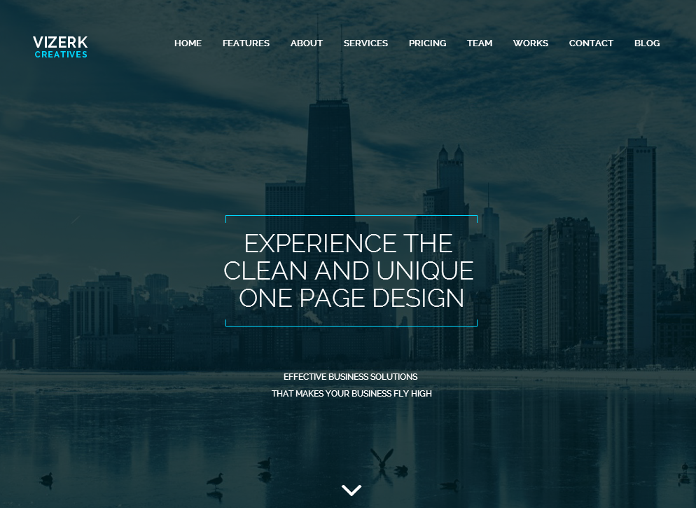

“Vizerk HTML5 Template ” Documentation by “DesigningMedia” v1.0
“Vizerk HTML5 Website Template”
Created: 01.08.2014
By: DesigningMedia
Email: support@designingmedia.com
Thank you for purchasing my template. If you have any questions that are beyond the scope of this help file, please feel free to email via my user page contact form here. Thanks so much!

Table of Contents
- Introduction
- Getting Started
- How to use Google Map
- How to edit a jQuery file
- How to edit a HTML file
- How to set timer,youtube video and slider images
- Requesting Support
- Credits
- Version History
A) Introduction - top
The Vizerk HTML5 website template is a custom design minimal personal blogging, portfolio template for displaying artwork. The Vizerk HTML5 template features a fully responsive framework that looks fantastic on any mobile device and retina display ready for high-quality resolution graphics. This template suitable for personal bloggers, photographers, designers, graphic designers, showcase sites small business sites etc.
It contains custom blog layouts and custom portfolio template layout options and 22 valid HTML5 page templates. Also we builded white and dark version for our dear clients. The Vizerk template features the coded with Bootstrap 3.0, HTML5 & CSS3 and unlimited color schemes. It’s compatible with all modern browsers and search engine friendly. So showcase your artworks and blogging posts with this awesome template!
This document covers the installation, set up, and use of this theme and provides answers and solutions to common problems and issues - we encourage you to read this document thoroughly if you are experiencing any difficulties. If you have any questions that are beyond the scope of this document, feel free to post them in the dedicated support forum. (support@jollythemes.com)
B) Getting Started - top
Thank you for purchase this product. Vizerk is a responsive HTML5 website template component based in Bootstrap 3.+, HTML5 and CSS and JavaScript code.
B-1) Used CSS Files
Place the reference for CSS and Javascript files inside the “head” section of your page:
B-2) Used jQuery Plugin
We listed below used jQuery plugins please check them.
B-3) Bootstrap Grid System
You can use a column with a grid system composed up to 12 columns. This make more simple to organize your content. See the examples:
YOUR CODES GOES HERE
Our you can use the grid system with 2 columns like this;
YOUR CODES GOES HEREYOUR CODES GOES HERE
B-4) Using Awesome Font Icons
Font Awesome gives you scalable vector icons that can instantly be customized — size, color, drop shadow, and anything that can be done with the power of CSS. First you can download awesome font icons goes here : http://fortawesome.github.io/Font-Awesome/ (we included to the .zip).
Then upload fonts folder to the your css/ folder. That's it! Now use font awesome icons like this;
B-5) Drop Down Menu Usage
We used Smoth Scrolling effect and standard drop down menu with this template. Here are we listed full example menu with all elements.

How to set your maintenance page time, slider and youtube video.
While you do some changes on your stuff you can set maintenance page .
Change the date as below code (you can find at footer of maintenance page)
Just change demos folder image or set path of your image(you can find at footer of maintenance page)
To Change youtube video just set new url (you can find at after body starts)
youtube
Then upload fonts folder to the your css/ folder. That's it! Now use font awesome icons like this;
B-6) Using Color Schemes
We build an example color schemes for you but dont worry, you can create your own color combinations very easy. So, If would you like to change anythigns please open style.css and search like this;
/* ----------------------------------------------------
COLOR SCHEMES line no - 1645 *Change color, border color, and background to apply.
------------------------------------------------------- */
color:#27E0FF; //Blue
color:#DDD; //Grey
C) How to use Google Map - top
We build an amazing Google Map API qith a jQuery code. If would you like to see how we used a google map please check below;
http://maps.google.com/maps/api/js?sensor=false
Then call this plugin. This is your location (-37.801578, 145.060508). Is this plugin from application.js file.
Add Google Map to the your site;
D) How to edit a jQuery file - top
We used some great jQuery plugins for this template. All our plugins has been added from custom.js and single page templates file from template folder. If you want to edit some single pages or just you want to edit application.js please open it a text editor like Dreamweaver, Notepad or Notepad++ and edit any lines what you want.
Please check custom plugins from /js/application.js file.
E) How to edit a HTML file - top
We have included 22 custom HTML templates like homepage styles, single styles, blog styles etc. Please open any HTML files with a text editor like Dreamweaver, Notepad or Notepad++ and edit any lines what you want.
G) Requesting Support - top
Please remember you have purchased a very affordable template and you have not paid for a full-time web design agency. Occasionally we will help with small tweaks, but these requests will be put on a lower priority due to their nature.
Support is also 100% optional and we provide it for your connivence, so please be patient, polite and respectful.
Before seeking support, please...
- Make sure your question is a valid plugin issue and not a customization request.
- Make sure you have read through the documentation before asking support on how to accomplish a task.
- Make sure to double check the plugin FAQs.
- If you have customized your plugin and now have an issue, back-track to make sure you didn't make a mistake. If you have made changes and can't find the issue, please provide us with your changelog.
- Almost 80% of the time we find that the solution to people's issues can be solved with a simple "Google Search". You might want to try that before seeking support. You might be able to fix the issue yourself much quicker than we can respond to your request.
- Make sure to state the name of the plugin you are having issues with when requesting support via CodeCanyon.
H) Credits - top
I wanted to thank you personally for purchasing our HTML template. I hope you enjoy the plugin fully and that it works well for your or your client's website.
Resources used in Design - Also a thanks to all the awesome resources I've used/purchased for the development of this template.
- Google Map API
- jQuery Base
- Bootstrap 3.0
- Fitdiv JS
- Retina JS
- Wow Animations
- Flexslider
- Isotope Masonry Effect
- PrettyPhoto
- All plugins coded by Designing Media team
I) Version History - top
You can find the version history (changelog.txt) file on Vizerk-full.zip folder
Once again, thank you so much for purchasing this plugin. As I said at the beginning, I'd be glad to help you if you have any questions relating to this plugin. No guarantees, but I'll do my best to assist. If you have a more general question relating to the template on ThemeForest, you might consider visiting the forums and asking your question in the "Item Discussion" section.
Designing Media Team